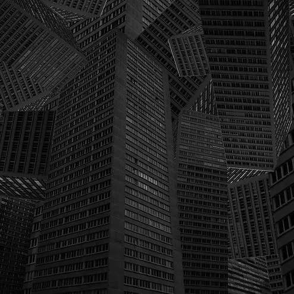
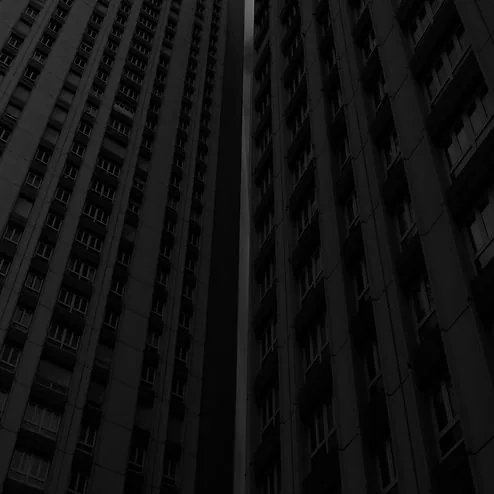
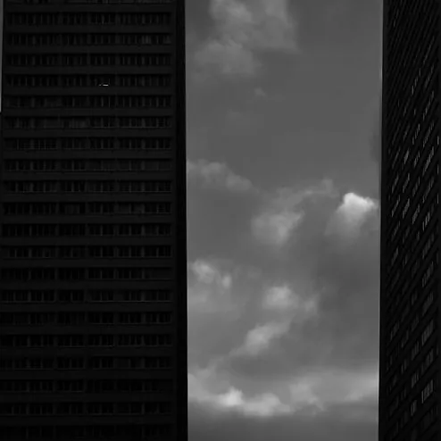
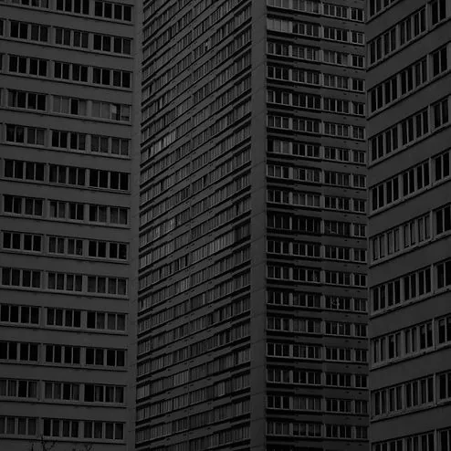
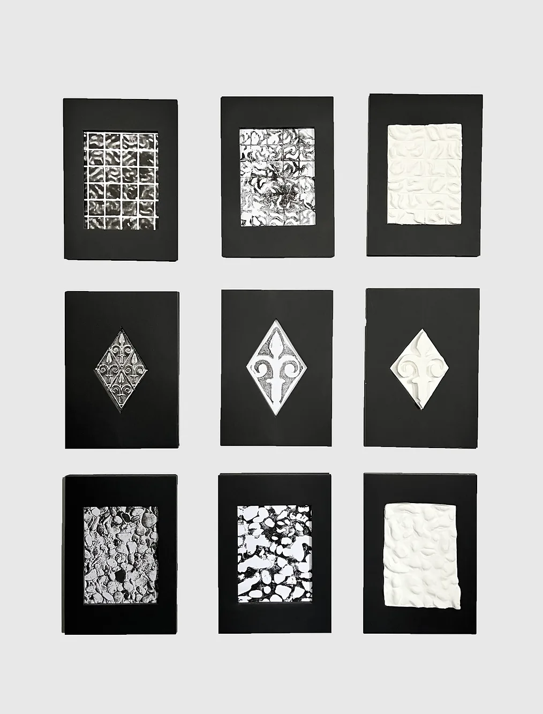

« Une œuvre d’art est un coin de la création vu a travers un tempérament » Émile Zola
Inspiré par le célèbre couple Becher et leur approche sérielle en photographie, j’ai été profondément marqué par une émotion d’oppression lors du traitement de mes propres photographies. La grandeur des immeubles semblait infinie, leur similitude frappante créant une atmosphère étouffante. J’ai choisi de présenter ces quatre clichés en noir et blanc pour intensifier cette sensation.À la manière de Gracomo Costa, qui explore la densité urbaine à travers ses compositions d’immeubles entassés, j’ai utilisé Photoshop pour créer un collage, accentuant ainsi l’effet d’oppression où les bâtiments semblent envahir l’horizon. Dans le deuxième photographie, j’ai manipulé les perspectives afin de mettre en évidence la variété des plans sur lesquels les bâtiments s’érigent. La troisième laisse transparaître l’idée que même le ciel semble se transformer en une structure construite. Enfin, dans la dernière capture, la grandeur vertigineuse des édifices crée une sensation d’oppression, mais une mince ligne semble s’élever vers le ciel, évoquant une lueur d’espoir au milieu de ces deux masses imposantes.



Projet réalisé en classe de Première au lycée – 2022
J’ai réalisé une série de trois approches différentes du site autour de la matérialité et de la texture.La première approche s’est faite par la photographie, afin d’observer et de capter les différentes matières présentes sur le site, leurs détails, leurs variations et leur rapport à la lumière.La deuxième approche est plus texturielle. Je suis allée sur site pour prélever des empreintes de textures, puis j’ai utilisé de l’encre pour les reporter sur papier. L’encre se déposait surtout dans les zones creuses et les vides, ce qui faisait apparaître un jeu entre le plein et le vide, entre les reliefs et les espaces en retrait.Enfin, la troisième approche consistait à traduire ces textures en volume à travers la poterie. Cette étape permettait de passer à une lecture en 3D, plus précise et plus physique, en reconstituant les reliefs
Projet réalisé en deuxième année de licence à l’Ecole Spéciale d’Architecture – 2026